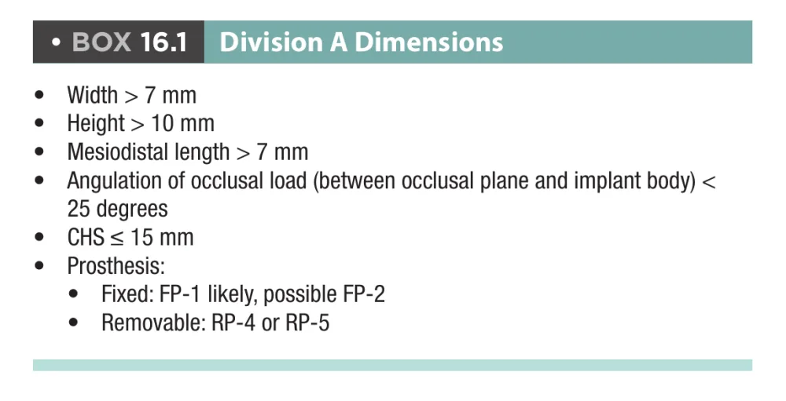
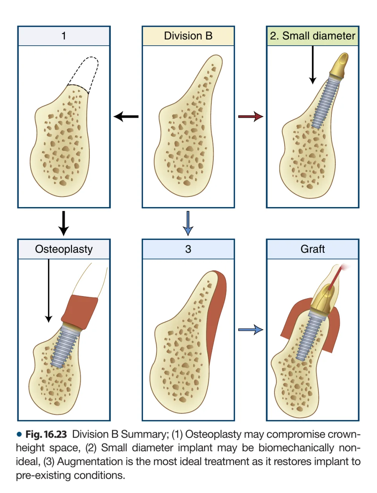

نسخه استخراجشده؛ ترجمه یا تأیید علمی انجام نشده است. وضعیت: captured
طبقهبندی استخوان موجود (Misch Division) چهار دیویژن دارد — A تا D — و ستون فقرات این درس و درس بعد است.
ابعاد دیویژن A:
• عرض بیش از ۷ میلیمتر
• ارتفاع بیش از ۱۰ میلیمتر
• طول مزیوـدیستالی بیش از ۷ میلیمتر
• زاویهی بار اکلوزالی (میان صفحهی اکلوزال و بدنهی ایمپلنت) کمتر از ۲۵ درجه
• CHS کمتر یا مساوی ۱۵ میلیمتر
• پروتز: ثابت — بهاحتمال زیاد FP-1، ممکن است FP-2، متحرک — RP-4 یا RP-5
عدد ۷ میلیمتر عرض را از درس پیش میشناسی — همان ۴ + ۲ + ۱. و عدد ۷ میلیمتر طول مزیوـدیستالی را از یونیت پیش (۱٫۵ + ۴ + ۱٫۵). طبقهبندی دیویژن، همان محاسبات را به یک نام تبدیل میکند.
و اکنون بخشی که ارزش عملی زیادی دارد — چرا قطر بزرگتر بهتر است:
این فهرست بلند است، ولی یک عدد در آن برجسته است:
«استحکام ماده با توان چهار نسبت به شعاع ایمپلنت افزایش مییابد. (یک ایمپلنت ۴ میلیمتری ۱۶ برابر قویتر از یک ایمپلنت ۲ میلیمتری است.)»
توان چهار. این یعنی دو برابر کردن قطر، استحکام را شانزده برابر میکند — نه دو برابر. برای همین ایمپلنتهای قطر بزرگتر کمتر میشکنند.
و مزایای دیگر:
• «هرچه قطر ایمپلنت بزرگتر، سطح بیشتر و استرس کمتری از ناحیهی استخوان کرستال توزیع میشود.»
• «ایمپلنتهای قطر بزرگتر به صفحات کورتیکال جانبی نزدیکترند، که تراکم بیشتر و در نتیجه استحکام، مدول الاستیسیته و درصد تماس استخوانـایمپلنت بالاتری دارند.»
• «هرچه قطر ایمپلنت بزرگتر، استرس کمتری به پیچ اباتمنت وارد میشود، و عوارضی مانند شل شدن یا شکست پیچ کمتر محتمل است.»
• «اباتمنت با قطر بزرگتر گیر سمانی بیشتری برای کراون نهایی فراهم میکند.»
و سه هشدار دربارهی ایمپلنتهای باریک که کمتر گفته میشود:
یکم: «ایمپلنتهای با قطر کوچکتر (حدود ۳٫۰ میلیمتر) اغلب یکتکهاند تا خطر شکست کاهش یابد. ایمپلنتهای یکتکه به ترمیم فوری نیاز دارند، نه رویکرد مدفون یا یکمرحلهای. در نتیجه، بارگذاری و میکروموومنت در رابط استخوانـایمپلنت محتمل است، با خطر افزایشیافته برای تحلیل استخوان کرستال یا شکست ایمپلنت.»
به این زنجیره دقت کن: قطر کم ← یکتکه ← ترمیم فوری اجباری ← میکروموومنت ← تحلیل. یک تصمیم ابعادی، یک پروتکل جراحی را تحمیل میکند.
دوم: «کرستمدول و بخش کرستال بسیاری از ایمپلنتهای دوتکهی باریک، فلز صاف است تا ضخامت دیوارهی بدنه افزایش یابد؛ این بارهای برشی به استخوان کرستال ایجاد میکند و خطر تحلیل استخوان را بالا میبرد.»
سوم — و این استدلال اقتصادی هوشمندانه است: «هزینهی ایمپلنت برای بیمار به شمار ایمپلنت مربوط است، نه به قطر. بنابراین افزایش شمار ایمپلنتها برای ایمپلنتهای باریک، هزینه را برای بیمار (و پزشک) بالا میبرد.»
یعنی ایمپلنت باریک نه ارزانتر است و نه ایمنتر — چون معمولاً به شمار بیشتری از آن نیاز داری.
و یک نکتهی ارتباطی که نباید دستکم بگیری:
«بیمار با استخوان دیویژن A باید آموزش ببیند که این ایدهآلترین زمان برای ترمیم وضعیت بیدندانی اوست. بارها پزشک نمیتواند بیمار را از کاهش سریع حجم عرض استخوان و پیامدهای تأخیر در درمان آگاه کند.»
و ریشهی مشکل را هم میگوید: «متأسفانه، این بیماران ممکن است مشکل چشمگیری با ترمیم موجودشان نداشته باشند و بنابراین انگیزهای برای رسیدگی به وضعیت نداشته باشند.»

دیویژن B را «استخوان بهسختی کافی» (Barely Sufficient Bone) مینامند.
ابعاد:
• عرض ۲٫۵ تا ۷ میلیمتر — که خود دو زیرگروه دارد: B+ برابر ۴ تا ۷ میلیمتر و B-w برابر ۲٫۵ تا ۴ میلیمتر
• ارتفاع بیش از ۱۰ میلیمتر (مانند دیویژن A)
• طول مزیوـدیستالی بیش از ۶ میلیمتر (کمتر از ۷ در دیویژن A)
• زاویه کمتر از ۲۰ درجه (سختگیرانهتر از ۲۵ درجه)
• CHS کمتر از ۱۵ میلیمتر
• پروتز: ثابت — بهاحتمال زیاد FP-2 یا FP-3، متحرک — RP-4 یا RP-5
به دو تغییر نسبت به دیویژن A دقت کن: زاویه از ۲۵ به ۲۰ درجه سختگیرانهتر شد، و FP-1 از فهرست پروتزها حذف شد. هر دو پیامد مستقیم باریکتر بودن ریجاند.
و حالا اعداد تحلیل — که فوریت درمان را توضیح میدهند:
«مطالعات کاهش احتمالی ۲۵ درصدی عرض استخوان را در سال نخست و کاهش ۴۰ درصدی عرض استخوان را در ۱ تا ۳ سال نخست پس از کشیدن دندان نشان دادهاند.»
۲۵ درصد در یک سال، ۴۰ درصد در سه سال. این عدد ۴۰ درصد را از یونیت گزینههای پروتزی به یاد داری — همان کاهش عرض کرست قدام ماگزیلا.
و اکنون یک الگوی زمانی که کمتر شناخته شده و ارزش بالینی زیادی دارد:
«پس از رسیدن به حجم استخوان دیویژن B، ممکن است بیش از ۱۵ سال در مندیبل قدامی باقی بماند.»
و الگوی کلی چنین است: استخوان از دیویژن A به دیویژن B سریع تحلیل میرود و پس از آن یک فلات طولانی از دیویژن B تا دیویژن D وجود دارد.
این نکته تصمیمساز است. پنجرهی از دست دادن دیویژن A باریک است — یکی دو سال. ولی پس از آن، وضعیت سالها تقریباً ثابت میماند. پس فوریت درمان در همان ماههای نخست پس از کشیدن دندان است، نه بعد.
و سرعت تحلیل در نواحی مختلف یکسان نیست:
• «ارتفاع مندیبل خلفی چهار برابر سریعتر از ناحیهی قدامی تحلیل میرود.»
• «نواحی خلفی ماگزیلا سریعترین کاهش ارتفاع استخوان را در میان همهی نواحی داخلدهانی دارند» — بهدلیل گسترش سینوس.
و پیامدش: «نواحی خلفی فکها ممکن است زودتر از نواحی قدامی از نظر ارتفاع ناکافی (C-h) شوند.»
و اکنون سه گزینهی درمان دیویژن B — که باید هر سه را بشناسی:
گزینهی ۱ — استئوپلاستی: تبدیل ریج B به A با تراش کرست تا امکان جایگذاری ایمپلنت ۴ میلیمتری یا بیشتر فراهم شود.
و مرز دقیق چنین است: «وقتی بیش از ۱۰ میلیمتر ارتفاع استخوان باقی بماند، استخوان به دیویژن A تبدیل میشود. وقتی کمتر از ۱۰ میلیمتر باقی بماند، به دیویژن C-h تبدیل میشود.»
این یک شمشیر دولبه است. استئوپلاستی میتواند وضعیت را بهتر کند یا بدتر — و مرز میان این دو، همان ۱۰ میلیمتر است. باید پیش از تراش حساب کنی.
گزینهی ۲ — ایمپلنت باریک: جایگذاری ایمپلنت ریشهای باریک دیویژن B — مثلاً ۳٫۰ میلیمتری برای انسیزورهای جانبی ماگزیلا یا قدامیهای مندیبل.
گزینهی ۳ — افزایش استخوان: تبدیل B به A با گرافت.
و زمان لازم: «دورهی ترمیم دستکم ۴ تا ۶ ماه برای بلوغ گرافت لازم است، پیش از آنکه ایمپلنتهای اندوستئال جایگذاری شوند.»
و یک قاعدهی صریح که انتخاب را تعیین میکند: «یک ترمیم FP-1 بیشتر اوقات گزینهی افزایش استخوان را الزامی میکند.»
و نُه عیب ایمپلنت باریک — دو عدد نخست مهمتریناند:
۱. «تقریباً دو برابر استرس در ناحیهی کرستال بالایی اطراف ایمپلنت متمرکز میشود.»
۲. «سطح کلی کمتر یعنی بارهای جانبی روی ایمپلنت به استرسی تقریباً سه برابر بیشتر از ایمپلنتهای ریشهای دیویژن A میانجامد.»
دو برابر تمرکز استرس در کرست، سه برابر زیر بار جانبی. و به همین دلیل زاویهی بار در دیویژن B باید کمتر از ۲۰ درجه بماند تا قطر کم جبران شود.
و عیب هشتم، همان استدلال اقتصادی اسلاید پیش را کامل میکند: «دو ایمپلنت اغلب برای پشتیبانی پروتزی مناسب لازم است... پس سطح در نهایت بهدلیل شمار ایمپلنت بیشتر میشود، نه اندازه.»
و در پایان، یک اصل که پیشبینیپذیری گرافت را تعیین میکند:
«موفقیت مواد بازساختی برای افزایش استخوان با شمار دیوارههای استخوانی در تماس با مادهی گرافت همبستگی دارد.»
و مثالش روشن است: «یک نقص استخوانی پنجدیواره مانند ساکت دندان، با آلوگرافت قابل پیشبینیتر از یک نقص یکدیواره مانند گرافت اُنلی، استخوان میسازد.»
و اعداد عملی گرافت عرض: «معمولاً افزایش عرض ۱ تا ۳ میلیمتر با آلوگرافت و بازسازی هدایتشدهی استخوان به دست میآید، در حالی که بیش از ۳ میلیمتر عرض با گرافت بلوک اتولوگ قابل پیشبینیتر است.»
